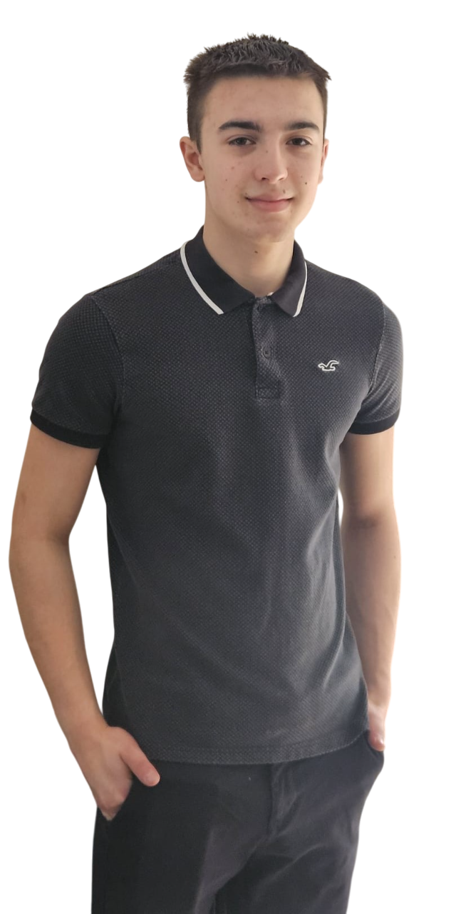

Hello! I am Oliver and I aspire to be a software developer when I grow up.
From the early age of 11, I developed a
deep passion for coding and computers. What started as curiosity quickly developed into a huge interest leading me to experiment with various microcontrollers
such as the Raspberry Pi, Arduino, and Microbit. I spent hours learning how to write code and understand the intricate workings of these amazing devices.
Now,
at the age of 16, I am a dedicated student with a strong focus on mathematics, physics, and computer science. My passion for coding has only grown over the years
along with my ambition to pursue a career as a software developer I find satisfaction in problem-solving and pushing the boundaries of what I can achieve.
Beyond
my academic and technology intrests I also prioritise maintaining a healthy lifestyle. Once a week I go climbing locally, which challenges both my physical and
mental endurance. Additionally, since the age of 10 I have attended a gym helping me stay fit, disciplined, and focused. Balancing my love for technology with an
active lifestyle has made me always eager to learn, improve, and take on new challenges which come with life. I am always looking for ways to push my limits and
grow overall.
In May 2025, I completed a one-week mechanical work experience placement at JM Imports, a performance car garage specializing in tuning. During
this time, I was involved in gearbox builds, engineering and dyno rolling road testing. In February 2026, I completed an online AI skills sprint hosted by Kaplan which
increased my knowledge and understanding about the fundamentals of AI. In April 2026, I attended an online hackathon hosted by Young Professionals which helped me to imagine
what it is like to work in the tech industry. In July 2026, I spent one week in the Opencast office learning about different job roles. I also using Python created a timer,
using HTML and CSS made a webpage and using Javascript controlled a robot. During the week I developed my problem solving, teamwork and communication skills.
